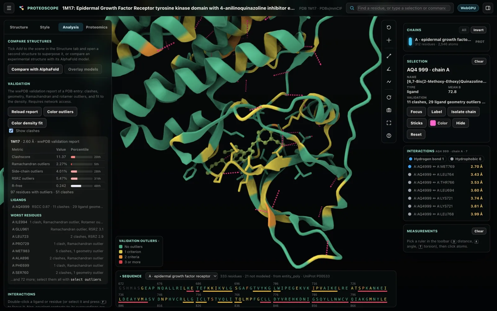

Validation and density maps
Check a model against the evidence: the wwPDB validation report with its outliers, clashes and fit to density, Ramachandran classes on MolProbity's contours for any model, and the experimental density map with the model's fit to it and the peaks of the difference map.
The validation report
Load report in the Analysis tab, or the validate command, fetches the wwPDB validation report of the active PDB entry: the same report RCSB and PDBe publish with every entry.

The summary gives these measures, each with its percentile rank among PDB entries:
- Clashscore
- Ramachandran outliers and side-chain outliers
- For X-ray entries, RSRZ outliers and R-free
- For cryo-EM entries, the average Q-score
Outliers per residue
Color outliers colors every residue by how many criteria it fails: clashes, bond and angle outliers, Ramachandran and rotamer outliers, and RSRZ above 2. The colors follow the report's residue plot.
| Criteria failed | Color |
|---|---|
| None | Green |
| 1 | Yellow |
| 2 | Orange |
| 3 or more | Red |
- Color density fit shows RSRZ (X-ray; above 2 is an outlier) or Q-score (cryo-EM) along the chain. The per-residue profile can plot the fit to density too.
- The selection card lists each residue's problems, with its RSRZ, RSCC, Q-score and EDIAm.
Ligands and clashes
- Ligands. The report shows each ligand's fit (RSCC, RSRZ) and its Mogul geometry outliers, so an unconvincing pose stands out. See also Ligands and docking.
- Clashes. Show clashes draws every reported clash as a line between the atoms involved.
Selecting problem residues
With a report loaded, these selections work and combine with the rest of the selection language:
outliers: residues the report flagsrsrz > 2,rscc < 0.8andqscore < 0.4: residues by their fit to density (RSRZ for X-ray entries, Q-score for cryo-EM)
For example, type this in the search box to select the outliers within 5 Å of a ligand:
outliers and within 5 of ligandThe validate command also takes clashes, fit, refresh or off; the help dialog (?) lists the syntax.
Ramachandran plot
The Ramachandran plot in the Analysis tab draws φ/ψ for every residue on MolProbity's Top8000 contours (Williams et al. 2018) and classifies every residue with MolProbity's criteria.
- There are contours for six residue categories: general, glycine, trans- and cis-proline, pre-proline, and Ile/Val. Choose a category to see its own contours.
- Residues are favored, allowed (yellow) or outliers (red). Glycine and proline are marked.
- Click a point to select the residue.
The classification works for predicted models and local files too. With a validation report loaded, the report's classes are shown.
Density maps
Load map in the Analysis tab, or map load, shows the experimental density of the active PDB entry.

| Source | What you get |
|---|---|
| X-ray entries | The 2Fo-Fc map (blue, 1.5σ) and the Fo-Fc difference map (green and red, ±3σ), from the PDBe volume server. |
| Cryo-EM entries | The entry's EMDB map, at EMDB's recommended contour level. |
| Map files | Open a map file… reads a CCP4 or MRC map on your computer, for a model you are building or refining. You can also open or drop a .map, .mrc or .ccp4 file, optionally gzipped, with its structure active. |
When PDBe's server is unavailable, maps come from RCSB's copy at maps.rcsb.org. Map files can be CCP4 or MRC 2014 (modes 0, 1, 2, 6 and 12; any axis order; either byte order).
Displaying the map
- Region. Draw the map around the focus (or the selection), following the view as you move, or whole. For an X-ray entry, "whole" is the box around the model, since a crystal's unit cell need not contain it.
- Style. A mesh or a transparent surface.
- Levels. Each channel has its own level in σ. For example,
map level 1.2contours the map at 1.2σ. - Near atoms trims the map to within 1.6–3 Å of the focused atoms, for figures.
The server sends a region at the finest sampling that fits the request, so a small region is sharper than the whole map. A downsampled view says so and keeps its level in σ.
Map fit
Map fit, or map fit, samples the full-resolution map at every atom; the server sends it in tiles. It reports:
- Atom inclusion at the contour, as EMDB's validation reports it.
- Per residue, the mean density in σ and the fraction of atoms inside.
Color by Fit to the loaded map, plot it in the per-residue profile, or select poorly fitting residues with mapfit < 1. For 8GUB in EMD-34272, the atom inclusion is 0.8935 (EMDB reports 0.896).
These commands load the density map, contour it at 1.2σ and fit the model:
map load
map level 1.2
map fitDifference-map peaks
For an X-ray entry (or an Fo-Fc map file), Difference peaks, or map peaks [<σ>], lists the peaks of the Fo-Fc map beyond +3σ and −3σ within 5 Å of the model, found in full-resolution tiles:
- Each peak's height in σ, refined between grid points, and the atom nearest to it.
- A hint of what it may be: a positive peak on or next to an atom (an unmodeled part or an alternative position), 2.4–3.4 Å from a nitrogen or oxygen (a possible water), or away from the model (unmodeled density); a negative peak on an atom (not supported by the data).
- Click a peak to go to it: the nearest residue is selected, so the map follows.
The ligand card lists the peaks within 3 Å of a ligand, the quickest check of whether the ligand, and each part of it, is in the density. For 1M17 at 2.6 Å, 135 positive and 65 negative peaks lie near the model, two of +3.6σ next to erlotinib. The hints come from distances alone; look at the density before acting on them.
Reports and maps in sessions
A saved session keeps the density map's settings. Validation reports and maps from the server are fetched again when the session opens; map files must be opened again. See Sessions, figures and methods.